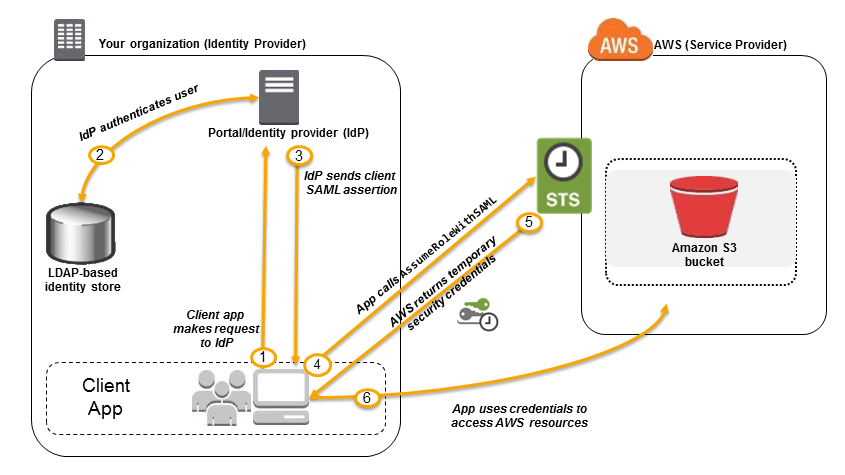
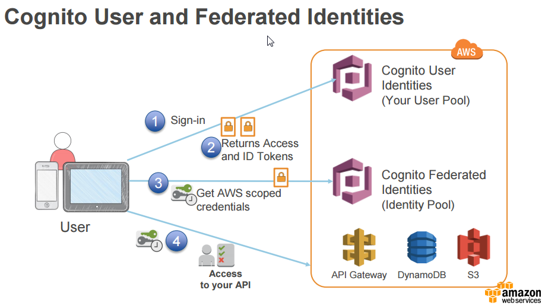
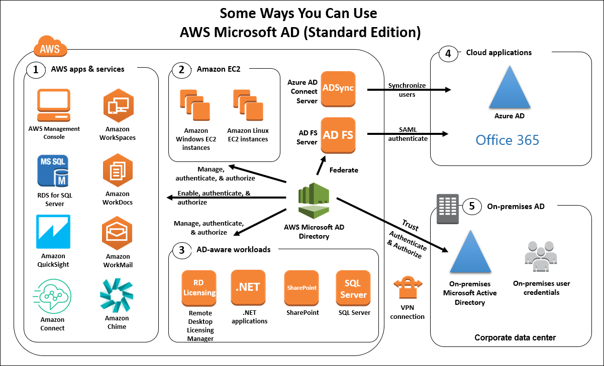
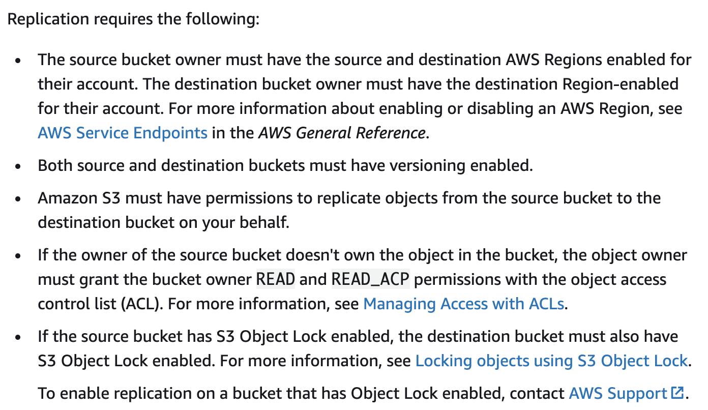

Incident Response
AWS Abuse Notice
- AWS will notify customers if they believe their infrastructure/resource is involved in potential abusive activities (spam, DDoS, etc.)
- These abuse complaints can be filled by other customers or indivudals who are being targetted by a resource you own
- Notifying customer will provide the source IP and any logs detailing the abusive activites
- Preventative actions are vital to thwart this activity. This could include a number of controls or activities such as server hardening, FIM, patch management, vulnerability scanning, proper WAF configuration, etc.
- Further investigation and triage activites are required once you receive an abuse complaint
GuardDuty
- Threath intelligence service provided by AWS that combs through the logs from a number of sources (CLoudTrail Events, VPC Flow Logs, and DNS Logs) to discover malicious activity within your AWS accounts. This could be excessive SSH login failures, DNS requests to a known CnC server, Bitcoin miner detected, etc.
- Uses a combination of maching learning, anomaly detection, and integrated threat intelligence to identify these threats. Extremely easy to setup.
- Will have a severity of high/medium/low along with a large amount of metadata (source and destination IP/port, date/time, associated IAM roles/groups, threat category, etc.
- Will only monitor Route53 DNS logs - not logs from an AD DNS server
- Does not take into account EC2 logs
- To whitelist an approved server, you can add a trusted IP list (IP of your vulnerability management server for example)
- Can add in known malicious IP's into a threat list
- Arhive a specific alert to mark as fixed/remediated
- You can write a rule to supress certain findings. This can be based on the type of finding (SSH brute force, Root cred usage, etc.)
- Active Findings Types -
- Ideally, all member accounts would send their logs to a central master account to have a single dashboard to view threats across your entire environment
IR Terminology
IR in the Cloud
- Many AWS tools; Config, CouldTrail, CloudWatch, and GuardDuty, help greatly in reducing the time, complexity, and cost of IR in the cloud
- Preparation - ensure logging (CloudTrail, VPC flow logs, etc.) is configured and AWS orgs are used to seperate accounts and reduce the blast surface
- Detection - use behaviourla based rules to identify odd behavior and potential threats (logging in at off hours or excessive failures from another country)
- Containment - can use predefined scripts to automatically restrict access to an EC2 instance. Best to automate this step
- Investigation - using CloudWatch logs to determine what happened within the server. Use Config to see what changed on the server level (security group changed right before an attack)
- Recovery - use pre-built ami to quickly recover a new application server or cloudformation to deploy an entirely new stack
IAM
AWS Organizations
- Offers a centralized policy-based management (SCP) and consolidated billing for multiple AWS accounts
- Service conrol policies (SCP) - allows you to set overall policy restrctions on child accounts (deny disable cloudtrail or deny access to s3 for example) from the master account
- Consolidated billing - allows you to see a breakdown of costs by accounts within your organization
- Even if you are a root user in the child account, the SCP will still take presedence in limiting your access
- Organizational Unit (OU) - allows us to group AWS accounts into different groups based on their use to more easily assign SCP's
- Root OU comes by default. From here you can create multiple OU's and assign accounts or additional OU's to those. SCP's can then be applied at the OU or AWS account level
IAM Policy Logic
- Decision starts with an assumption that the request will be denied. If there is no attached policy, we will deny that access by default
- Then, all of the attached policies will be evaluated to determine the appropriate action
- An explicit deny will be checked
- If no expliict deny and policy allows for the access, it will be allowed
- An explicit deny policy will take precedence over an allow policy
Identity and Resource Based Policies
- Identity policies are attached to an IAM user, group, or role. These define what an identity can do. For example, we can attach an IAM policy to a user that allows them read-only access to S3
- Resource based policy are attached directly to a resource, like an s3 bucket policy, SQS queue, etc. With these we can specify who has access to the resource and what kind of actions they can perform
- Identity and resource based policies are combined when evaluating access to perform an action. For example, if an identity policy allows read and write on s3 and resource allows list, read, and write, then we can perform all 3 actions
- Unless there is an explicit deny in any of the policies, they will be evaluated together. You can have no identity policy but a resource policy that allows full access and the end result would be full access
IAM Policies
- These allow us to define what level of permissions should be given to a particular aws resource (users, roles, services (s3, sqs, etc.)). Four parts - statement, effect, action, resource
- The statement element is required. Can contain multiple individual statements enclosed by {}
- The action element defines the list of actions that should be allowed or denied
- Resource element defines the object that the statement covers. This can be an ARN or wildcard (*)
- Effect element defines whether we are allowing or denying the action on the specified resource
{
"Version": "2012-10-17",
"Id": "BucketPolicy",
"Statement": [
{
"Sid": "1",
"Effect": "Allow",
"Action": "s3:GetObject",
"Resource": "arn:aws:s3:::noah-robert-bucket/*"
}
]
}
Delegation - Cross Acount Trust
- Identity acount - create a user in one accont end establish a trust relationship between other accounts to allow them to access without signing in to a new account
- For hybrid workload deployments, AWS Identity Services allow you to establish a single identity and access strategy across your on-premises environments and AWS
- Requires a cross-account role in the second account that we will assume to in order to gain access. This allows a user in the first account to assume this role once the proper permissions are set
- Must establish trust between the account that owns the role and the resources (trusting account) and the account that contains the users (trusted account). To do this, the administrator of the trusting account specifies the trusted account number as the Principal in the role's trust policy
- To complete the configuration, the administrator of the trusted account must give specific groups or users in that account permission to switch to the role - below
{
"Version": "2012-10-17",
"Statement": {
"Effect": "Allow",
"Action": "sts:AssumeRole",
"Resource": "arn:aws:iam::ACCOUNT-ID-WITHOUT-HYPHENS:role/Test*"
}
}
External ID Delegation
- Additional data that can be passed to the AssumeRole API of the STS
- At times, you need to give a third party access to your AWS resources (delegate access). One important aspect of this scenario is the External ID, optional information that you can use in an IAM role trust policy to designate who can assume the role
- This external ID must be provided when assuming this role via the CLI/SDK - not able to assume a role via the console that requires an External ID
{
"Version": "2012-10-17",
"Statement": {
"Effect": "Allow",
"Action": "sts:AssumeRole",
"Principal": {"AWS": "Example Corp's AWS Account ID"},
"Condition": {"StringEquals": {"sts:ExternalId": "12345"}}
}
}
EC2 Instance Meta-Data
- Data about your instance (IP, instance type, hostname, etc.) that can be accessed within the instance itself (http://169.254.169.254/latest/meta-data/)
- AWS can also push data to the instance meta-data service that the ec2 instance can then use (ec2 instance connect pushes a one time ssh public key to authenticate you and enable you to access via the browser)
- Using iptables, you can block local access to the instance meta-data service on a per user basis
IAM Role
- An IAM identity that you can create in your account that has specific permissions. An IAM role is similar to an IAM user, in that it is an AWS identity with permission policies that determine what the identity can and cannot do in AWS
- Intended to be assumable by anyone who needs it. Also, a role does not have standard long-term credentials such as a password or access keys associated with it. Instead, when you assume a role, it provides you with temporary security credentials for your role session.
- We will have a set of policies associated with the role (S3 read only, ec2 start instance)
- With IAM roles we do not need to hardcode passwords or access keys in order to access AWS services (accessing data in S3 for example)
- Many resources (ec2 instances, lambda functions) can assume these roles along with users
- When we assign a role to an instance, AWS will push the temp credentials (access key, secret access key, and a token) to the ec2 instance meta-data and we can then retrive these temp credentials to further authenticate (/latest/meta-data/iam/security-credentials/IAM-ROLE-ASSOCIATED-WITH-INSTANCE)
IAM Version
- This defines the version of the policy language and the overall rules sytnax can differ based on the version being used
- 2012-10-17 - current version of the policy element and this is the recommended version to define
- 2008-10-17 - ealier version of the policy element that shuold not be used any more. If no version element is included it will default to this
- 2012 has certain aspects that are not supported in the 2008 version. For example, using a variable of ${aws:username} is only allowed in the 2012 version
- version element (2012-10-17 - specifies the language of the policy) != policy version (this is versioning of your policy to track changes and revert if needed)
IAM Policy Variable
- ${aws:username} - used when you don't know the exact value of a resource or condition when you're creating the policy
- Advantage of a direct ARN - typically means we cannot reuse this policy and assign to other users/groups. The same permissions will not be allowed across the board
- Advantage of using a policy variable - we can resuse this policy and attach it to as many users/groups as we want and the same permission will be allowed
- Only work with the 2012 Policy Version
Principal/NotPrincipal
- Used to define things like IAM users, IAM roles, federated users, AWS accounts/services, etc. that will be allowed or denied access to a resource
- Cannot be used in identity based policies (inline policies attached to user/roles) more for s3 bucket or sqs queue policies (resource-based policies)
- NotPrincipal combined with a deny action will explicitly deny the access to all principals EXCEPT for the ones specified
- If you use the NotPrincipal with deny action, you will need to create an identity-based policy that explicitly allows access to that resource. Because in the resource-based policy we are not allowing any access, just denying
{
"Version": "2012-10-17",
"Statement": [{
"Effect": "Deny",
"NotPrincipal": {"AWS": [
"arn:aws:iam::888913816489:user/Alice"
]},
"Action": "s3:*",
"Resource": [
"arn:aws:s3:::BUCKETNAME",
"arn:aws:s3:::BUCKETNAME/*"
]
}]
}
{
"Version": "2012-10-17",
"Id": "BucketPolicy",
"Statement": [
{
"Sid": "2",
"Effect": "Allow",
"Principal": {
"AWS": "arn:aws:iam::cloudfront:user/CloudFront Origin Access Identity ##############"
},
"Action": "s3:GetObject",
"Resource": "arn:aws:s3:::noah-robert-bucket/*"
}
]
}
IAM Conditional Element
- Allow us to specifiy conditions for when a policy is in effect. For example, state that access to a resource is only allowed if the access date is before a specified date
- Can specify access only from a certain IP, or limit access from a group of IP's. Can also have a condition requiring MFA to be enabled on the principal account attempting to access the resource
- Operators include String, Numeric, Date/Time, Boolean, IP, ARN, etc.
{
"Version": "2012-10-17",
"Statement": {
"Effect": "Allow",
"Action": "*",
"Resource": "*",
"Condition": {
"IpAddress": {
"aws:SourceIp": "121.121.121.121/32"
}
}
}
}
AWS Security Token Service (STS)
- Service that enables you to request temporary, limited-privilege credentials for AWS Identity and Access Management (IAM) users or for users that you authenticate (federated users)
- When you assign an IAM role to an instance, in the background the instance meta-data will provide the temporary access key, secret access key, and session token to authenticate you and grant you the correct access
- These credentials are short-term and expire after a specified duration. Because of this, key rotation is not needed for these creds vs standard access keys (/root/.aws/credentials)
- STS allows us to perform the assumerole funtion from one account to a role in another (once the trust relationship is established)
- The IAM user will still need to have their long-term creds stored on thier local workstation in order to perform the assumerole function - SSO would be an alternative that still uses STS to assume temp credentials
Federation
- Identity federation is a system of trust between two parties for the purpose of authenticating users and conveying information needed to authorize their access to resources. In this system, an identity provider (IdP) is responsible for user authentication, and a service provider (SP), such as a service or an application, controls access to resources.
- Can utilize LDAP to store all of your users, and use this data to authenticate to other services (AWS, HR, Jenkins, etc.)
- Allows exteranl identities to have access in your AWS account without having an IAM user acount. They are only present in the external identities (Active Directory (corp IDP) - Facbook, Google, Cognito (Web IDP))
- Identity Broker - an intermediary that connects the identity provider (AD) to the service provider (AWS). Trust is established between the broker and service provider
- If user creds are valid, the broker will contact STS which will share the access key, secret key, session token, and duration. With all of this the user will then be able to login to the console/CLI based on permissions

SAML
- SAML is a secure, XML based communication standard for relaying identity information across organizations
- Standard that allows an identity provider (IdP) to authenticate users and pass identity and security information about them to a service provider (SP), typically an application or service. With SAML, you can enable a single sign-on experience for your users across many SAML-enabled applications and services
- This single login can grant you access to a number of services/applications from one set of credentials
- IDP will validate the users creds and return a security assertion as part of the response. The user can then do a POST of this security assertion data to the service provider, who will in turn grant temporary access to the user and redirect them to the management console. This requires trust between the IDP and SP
SSO
- AWS Single Sign-On (SSO) makes it easy to centrally manage access to multiple AWS accounts and business applications and provide users with single sign-on access to all their assigned accounts and applications from one place
- AWS CLI integration - users can authenticate via the CLI and will be able to perform CLI operations without have to add their keys to the ~/.aws/credentials file - aws sso login --profile foobar
- Must choose an identity source (AWS SSO, AD, external IDP) where you will administer your users and groups
- With AWS SSO you assign a user/group within your account to have access and use permission sets to set the associated policy/permissions
- AWS CLI Integration - must have AWS CLI version 2
Cognito
- Amazon Cognito lets you add user sign-up, sign-in, and access control to your web and mobile apps quickly and easily
- Provides authentication, authorization, and user management
- User pools - these take care of the entire authentication and authorization process. You can define the username/password requirements, MFA settings, and many other options
- Identity pool - provides the functionality of federation for users within your pools. Allows us to authorize users of the application to access various AWS services. This allows us to grant access to something like DynamoDB without hard coding any access keys
- The identity pool can take users authenticating via cognito user pool, facebook, twitter, SAML, etc. and federate them - giving them secure access to AWS services regardless of where they originally came from
- Identity pool interacts with STS to provide a tempoaray access key, secret key, and session token to the web application user, granting them access to AWS services

AWS Directory Service
- AWS Managed Microsoft AD, enables your directory-aware workloads and AWS resources to use managed Active Directory in the AWS Cloud. AWS Managed Microsoft AD is built on actual Microsoft Active Directory and does not require you to synchronize or replicate data from your existing Active Directory to the cloud
- With this, AWS handles admin functions like HA, monitoring, backups, recovery, etc.
- AWS Managed Microsoft AD - powered by an actual Microsoft AD server in the cloud. Standard edition (less than 5000 users) and enterprise edition
- AD Connectory - proxy service that connects applications in the cloud to your exisitng on-prem Microsoft AD. This connector will forward sign-in reqests to your on-prem AD server for authentication of applications in the cloud
- Simple AD - Microsoft AD that is powered by Samba (basically a free version of AD). Support basic functions like user/group creation and memberships, joining a linux server, group policies, kerberos SSO, etc. but not some features like trust relationships, MFA, DNS dynamic updates, LDAPS, etc.
AD Trust
- In AWS, we can create a trust relationship for the IAM so that we can have cross-account IAM access via the assumerole STS function
- in AD, domain to domain communication can occur through a similar trust. This trust is a secure authentication channel between two entities
- AD Trust allows us to grant access to resources to users, groups, and computers across entities
- Trust can be one-way or two-way depending on the requirements
- If you want to migrate AD aware workloads/apps to the cloud, you can use AD trust to connect AWS managed AD to your existing on-prem AD. Users can then access AD aware applications in the cloud using their exisitng AD creds. No need to synchronize new users, groups, passwords

S3 Bucket Policies
- One limitation with IAM is that it is usually restricted to the principals, such as user, roles, and groups within AWS
- When we look at access to S3, this needs to be much more granular as we are usually allowing access from external entities who don't exist as a principal in AWS. These are called bucket policies which are attached directly to the bucket
- By default, objects uploaded to S3 are not publicly accesible. If we want to grant full access or access from only a subset of IP's, we can do this within our bucket policy
{
"Version": "2012-10-17",
"Id": "S3BP",
"Statement": [
{
"Sid": "Allow_IP",
"Effect": "Allow",
"Principal": "*",
"Action": "s3:*",
"Resource": "arn:aws:s3:::examplebuckets/*",
"Condition": {
"IpAddress": {"aws:SourceIp": "121.121.121.0/24"}
}
}
]
}
- Cross account S3 access - all s3 buckets could exist in account A with all ec2 instances in account B. Would need to specifically allow this access to push backups from B -> A via our bucket policy
- Note the two resouce lines below - this grants us access to the s3 bucket itself (to perform an ls s3) and the contents of the bucket (to perform a copy of an object
{
"Version": "2012-10-17",
"Statement": [
{
"Sid": "1",
"Effect": "Allow",
"Principal": {
"AWS": "arn:aws:iam::123456789098:root"
},
"Action": "s3:*",
"Resource": [
"arn:aws:s3:::examplebuckets",
"arn:aws:s3:::examplebuckets/*"
]
}
]
}
Canned ACL's - Bucket Policies
- All buckets and its objects have an ACL associated with them that S3 will check against when a request is made
- By default when we create a bucket/object, the resource owner has full control over the resource
- Canned ACL's - pre-defined ACL with a set of permissions associated with them. This can be specified with the x-amz-acl header in the request
- Examples would be private, public-read, bucket-owner-full-control, etc.
- Any file we upload to a bucket that does not belong to our AWS account, we need to ensure the associated ACL has the bucket-owner-full-control setting so the bucket owner in the other account can acces as well
Presigned URL's
- All objects by default are private. Only the object owner has permission to access these objects. However, the object owner can optionally share objects with others by creating a presigned URL, using their own security credentials, to grant time-limited permission to download the objects
- A presigned URL gives you access to the object identified in the URL, provided that the creator of the presigned URL has permissions to access that object. That is, if you receive a presigned URL to upload an object, you can upload the object only if the creator of the presigned URL has the necessary permissions to upload that object
- Can be used to allow access to material that requires a valid subscription to access
- Allows a guest user to access an object without having to authenticate with AWS or even have an associated IAM user account
- When you create a presigned URL for your object, you must provide your security credentials, specify a bucket name, an object key, specify the HTTP method (GET to download the object) and expiration date and time. The presigned URLs are valid only for the specified duration
S3 Versioning
- Versioning is a means of keeping multiple variants of an object in the same bucket. You can use versioning to preserve, retrieve, and restore every version of every object stored in your Amazon S3 bucket. With versioning, you can easily recover from both unintended user actions and application failures
- The versioning state applies to all (never some) of the objects in that bucket. The first time you enable a bucket for versioning, objects in it are thereafter always versioned and given a unique version ID
- When you delete a file, a deletion marker is created for the latest version, but all previous versions still exist and can be retrieved
- Once you enabled versioning, you can never fully disable it. You can only suspend it on a bucket level
- Objects stored in your bucket before you set the versioning state have a version ID of null. When you enable versioning, existing objects in your bucket do not change. What changes is how Amazon S3 handles the objects in future requests
S3 Cross Region Replication
- Replication enables automatic, asynchronous copying of objects across Amazon S3 buckets. Buckets that are configured for object replication can be owned by the same AWS account or by different accounts. You can copy objects between different AWS Regions or within the same Region
- User CRR to meet compliance requirements, minimize latency of accessing objects, and increase your overall opertaional efficiency (allow compute clusters in different regions to analyze the same set of objects)
- Both the source and destination buckets must have versioning enabled

S3 Object Lock
- WORM - write once read many. Once the data is added, it cannot be modified or deleted (tampered with)
- Allows us to store objects using a write-once-read-many (WORM) model. You can use it to prevent an object from being deleted or overwritten for a fixed amount of time or indefinitely. Object Lock helps you meet regulatory requirements that require WORM storage, or simply add another layer of protection against object changes and deletion
- Retention mode: Governance - IAM accounts with specific permissions are able to remove the object lock from specified objects
- Retention mode: Compliance - the object lock cannot be removed, even by the root account
- A retention period specifies a fixed period of time during which an object remains locked. During this period, your object is WORM-protected and can't be overwritten or deleted
- A legal hold provides the same protection as a retention period, but it has no expiration date. Instead, a legal hold remains in place until you explicitly remove it. Legal holds are independent from retention periods
- Object locks only work in versioned buckets, and retention periods / legal holds apply to individual object versions
MFA API Access
- With IAM policies, you can specifiy which API operations a user is allowed to call
- For added security, we can requires MFA for certain API operations (ec2 terminate for example)
- Will need to login with the MFA code in order for the policy below to work
- Via the CLI you will not be able to perform the start/stop function without doing an sts get-session-token command first, which will grant you a new asscesskey/secretaccesskey after you authenticate with your token ID (from google authenticator for example)
{
"Version": "2012-10-17",
"Statement": [{
"Effect": "Allow",
"Action": [
"ec2:StopInstances",
"ec2:TerminateInstances"
],
"Resource": ["*"],
"Condition": {"Bool": {"aws:MultiFactorAuthPresent": "true"}}
}]
}
IAM Permissions Boundaries
- An advanced feature for using a managed policy to set the maximum permissions that an identity-based policy can grant to an IAM entity. An entity's permissions boundary allows it to perform only the actions that are allowed by both its identity-based policies and its permissions boundaries
- The permissions boundary for an IAM entity (user or role) sets the maximum permissions that the entity can have. This can change the effective permissions for that user or role. The effective permissions for an entity are the permissions that are granted by all the policies that affect the user or role
- When you use a policy to set the permissions boundary for a user, it limits the user's permissions but does not provide permissions on its own - this is granted through the permissions policies in IAM
- If my managed policy states I have admin access, but my permissions boundary only allows for S3 access, then all I will have access to is S3
- If we need mutiple or a more granular permissions boundary, you need to create your own. By default you can only attach one overall permissions boundary (S3FullAccess for example). Any explicit denial takes precedence
- The permissions for an entity (user/role) can be affected by identity-based and resource-based policies, permissions boundaries, SCP's, and session policies
{
"Version": "2012-10-17",
"Statement": [
{
"Effect": "Allow",
"Action": [
"s3:*",
"cloudwatch:*",
"ec2:*"
],
"Resource": "*"
}
]
}
IAM/S3
- IAM policies are usually applied at a bucket/object level
- Bucket level: "arn:aws:s3:::demo"
- Object level: "arn:aws:s3:::demo/*"
- Bucket level policies do not automatically get pushed down to the object level. The policy below would allow us to list objects of a bucket, but not perform a copy on a specific object within the bucket
{
"Version": "2012-10-17",
"Statement":
{
"Effect": "Allow",
"Action": ["s3:*"],
"Resource": ["arn:aws:s3:::test-bucket"]
}
}
- Whereas the statement below would allow us to perform all actions on the bucket and objects within the bucket (copy, delete, download, etc.)
{
"Version": "2012-10-17",
"Statement": [{
"Effect": "Allow",
"Action": ["s3:*"],
"Resource": ["arn:aws:s3:::test-bucket"]
},
{
"Effect": "Allow",
"Action": ["s3:*"],
"Resource": ["arn:aws:s3:::test-bucket/*"]
}]
}
- And the below would be combination of a bucket and object level policy. This is a risk, as it would apply to any bucket that starts with the same name - should not be used
{
"Version": "2012-10-17",
"Statement":
{
"Effect": "Allow",
"Action": ["s3:*"],
"Resource": ["arn:aws:s3:::test-bucket*"]
}
}